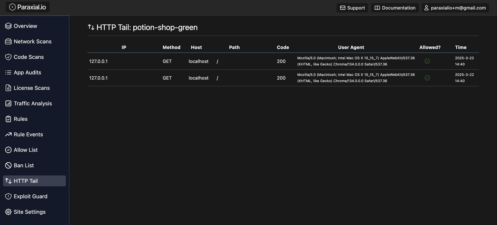
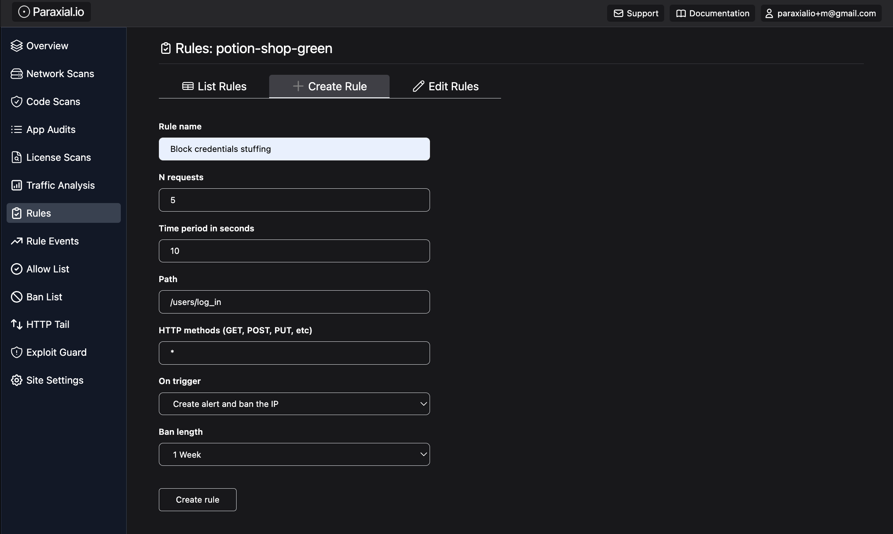
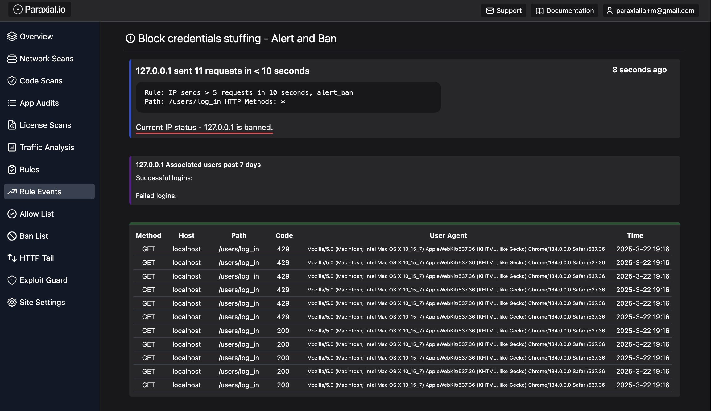
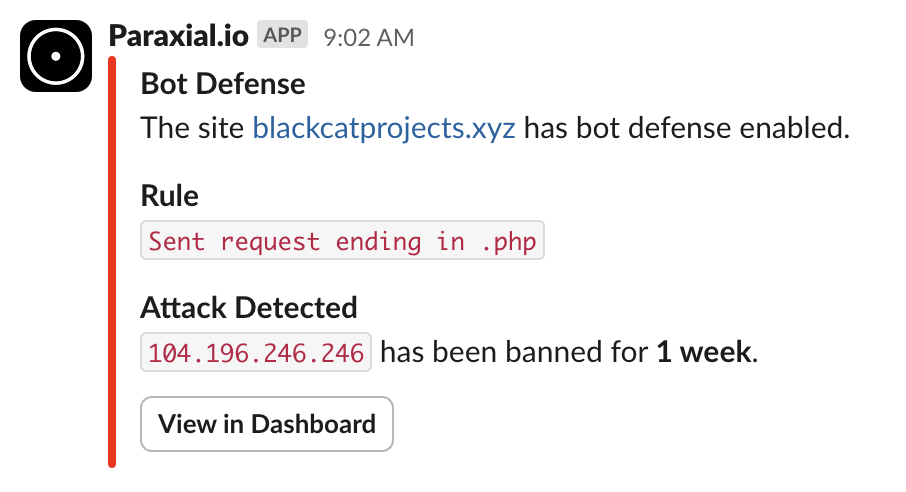

Getting Started with Paraxial.io for Elixir - Bot Defense
This guide is for Paraxial.io Bot Defense. A paid account is required. If you are on the free tier, email support@paraxial.io to request a 2 week free trial.
You will setup the following:
- Ingesting HTTP traffic
- Rate limiting - Ban IPs that do too many login attempts
- Honeypots - Ban IPs that submit a fake form
- Banning bots scanning for
.phproutes - Blocking data center/cloud IP attacks
Create Account and Install Paraxial.io
You can skip this section if you have already installed Paraxial.io by following the Getting Started guide for Application Secure.
Create your account here - https://app.paraxial.io/users/register
Confirm your email and create your first site:

Site Name - Cannot contain spaces.
Timezone - Select the timezone where you are located
Environment - Where is this application deployed? You should create one site for each environment.
Web facing - Does this application face the public internet? This is a label set by the account owner, not detected by the agent.
PII (Personal Identifiable Information) - Does this application handle sensitive user data? This is a label set by the account owner, Paraxial.io cannot access PII.
Install the Paraxial.io agent. The agent is written in Elixir, and installed as a Hex dependency - https://hex.pm/packages/paraxial
mix.exs
{:paraxial, "~> 2.8.4"}
mix deps.get
The package is installed as a normal Elixir dependency. Once you confirm the install was successful, go to your site in the web interface of app.paraxial.io -> Site Settings -> Site API Key.
With the private API key, configure your project:
config/dev.exs
config :paraxial,
paraxial_api_key: System.get_env("PARAXIAL_API_KEY")
Ingest HTTP Traffic
Create a new Git branch, then run mix test before making any code changes. If any tests are failing, make a note of that fact before you continue with the install.
Run:
mix paraxial.scan
To ensure you have the dependency installed and API configured correctly. If the scan runs and uploads successfully, continue.
Now that you are on a new branch, and have confirmed that your install is working, add the following plugs to record HTTP traffic:
endpoint.ex
# plug RemoteIp # This plug is optional, only needed if you are behind a proxy
plug Paraxial.AllowedPlug # Determine if an incoming request is allowed based on ban list
plug Paraxial.RecordPlug # To record requests that do not match the router
plug YourProjectNameWeb.Router # Change to your own project name
plug Paraxial.RecordPlug # To record requests that did match the router
Note that plug Paraxial.RecordPlug appearing twice is intentional.
Paraxial.io uses the value of conn.remote_ip for bot defense. If you are behind a proxy, every HTTP request will have the same IP. This can be fixed via the RemoteIP plug. For example, plug RemoteIp, headers: ["fly-client-ip"] is specific to fly.io deployments. Your configuration may be different.
Now start your application, make sure the configuration is correct, and send some local HTTP requests:
@ potion_shop % mix phx.server
Generated carafe app
[info] [Paraxial] v2.8.3 URL and API key found. Agent will be started <-- This is what you want to see
[info] Access CarafeWeb.Endpoint at http://localhost:4000
[info] GET /
[info] Sent 200 in 58ms
[info] GET /
[info] Sent 200 in 3ms
The requests will show as from localhost:

If your application has a large amount of HTTP traffic (> 100,000 HTTP requests/month), you can restrict sending traffic to only specific routes. For detailed instructions see the Bot Defense documentation page.
Rate Limiting with Rules
Now that you have the appropriate plug in place (plug Paraxial.AllowedPlug), define the following bot defense rule:
If an IP sends more than 5 login attempts in 10 seconds, ban for 1 week:

You can use a similar route in your own application during testing. Now send a few HTTP requests by refreshing the page and observe a rule event has been created:

By default, the Paraxial.io agent does not send user emails to the backend. You can get the history of login attempts for an IP address, instructions in the Bot Defense docs.
HTML Honeypot
Find a controller that does not require auth, create the following action:
# Values for second argument (length) are :hour, :day, :week, :infinity
def honeypot_ban(conn, _params) do
Paraxial.ban_ip(conn.remote_ip, :week, "Triggered honeypot form, ban for 1 week")
json(conn, %{ok: "system online"})
end
In your router, find a scope that goes through the :browser pipeline (for CSRF protection) and does not require auth, for example:
scope "/", ParaxWeb do
pipe_through :browser
post "/customer", PageController, :honeypot_ban
end
Create the form, with CSRF protection:
<%= form_for @conn, Routes.page_path(@conn, :honeypot_ban), [style: "display:none !important"], fn f -> %>
<%= text_input f, :email, tabindex: -1 %>
<%= text_input f, :password, tabindex: -1 %>
<%= submit "Register" %>
<% end %>
LiveView version:
def render(assigns) do
~H"""
<.form for={@form} id="customer_form" action={~p"/customer"} style="display:none !important">
<.input field={@form[:email]} type="email" label="Email" tabindex="-1" />
<.input field={@form[:password]} type="password" label="Password" tabindex="-1" />
<button>Register</button>
</.form>
...
# @form needs a value
def mount(_params, _session, socket) do
form = to_form(%{}, as: "user")
{:ok, assign(socket, form: form)}
end
Note that you have have to change the values here, for example your application may not have a PageController, you will have to substitute with a public controller action.
To test your implementation, use inspect element in your browser to remove display:none !important on the rendered page, then submit the form. If you get banned, the setup was successful.
Banning Malicious Clients Doing .php Requests
In a Phoenix app you may want to define a plug with some custom logic, for example if an IP sends a request ending in .php, this is a strong signal they are not a real user and should be banned. You could write this plug yourself, or use the one included with Paraxial.io.
endpoint.ex
plug RemoteIp, headers: ["fly-client-ip"] # This is specific to fly.io
plug Paraxial.AllowedPlug # Required to enforce Paraxial.io bans
plug Paraxial.RecordPlug # Optional, requires paid account
plug Paraxial.PHPAttackPlug, length: :week # Place before the router
plug HavanaWeb.Router # The value "HavanaWeb" will be different in your own project
plug Paraxial.RecordPlug # Optional, requires paid account
defmodule Paraxial.PHPAttackPlug do
@moduledoc """
Plug to ban IPs sending requests that end in .php
Most Elixir and Phoenix applications do not have routes ending in .php,
so this is a strong signal an IP is malicious. The default ban length
is one hour, this can be configured when setting the plug in your
endpoint.ex file:
plug Paraxial.PHPAttackPlug, length: :week
plug HavanaWeb.Router # Your application name will be different
Valid options for :length are :hour, :day, :week, :infinity
"""
import Plug.Conn
require Logger
@valid_lengths [:hour, :day, :week, :infinity]
@default_length :hour
@ban_message "Sent request ending in .php"
def init(opts) do
length = Keyword.get(opts, :length, @default_length)
if length in @valid_lengths do
opts
else
Logger.warning("[Paraxial] Invalid option for Paraxial.PHPAttackPlug: #{length}, using #{@default_length}")
[length: @default_length]
end
end
def call(conn, opts) do
if php_request?(conn.request_path) do
length = Keyword.get(opts, :length)
Task.start(fn ->
Paraxial.ban_ip(conn.remote_ip, length, @ban_message)
end)
conn
|> halt()
|> send_resp(403, Jason.encode!(%{"error" => "banned"}))
else
conn
end
end
defp php_request?(path) do
String.ends_with?(String.downcase(path), ".php")
end
end
The above code is the source for plug Paraxial.PHPAttackPlug. Below is an example of a ban notification from the Paraxial.io Slack App:

Now you may want to use a custom plug with your own logic in Elixir code. For this, Paraxial.io gives you the function:
Paraxial.ban_ip(ip, length, message)
Ban an IP address, both locally and on the Paraxial.io backend.
Returns the result of an HTTP request, for example:
{:ok, "ban created"} - returned on successful ban
{:error, "ban not created"} - returned if you attempt to ban an IP that is already banned
{:error, "invalid length, valid options are :hour, :day, :week, :infinity"}
If you are using this function in a blocking content, call with Task.start, https://hexdocs.pm/elixir/1.12/Task.html#start/1
- `ip` - Format should match conn.remote_ip, which is a tuple,
{192, 168, 1, 1} or {8193, 3512, 34211, 0, 0, 35374, 880, 29492}
- `length` - Valid options are :hour, :day, :week, :infinity
- `message` - A string comment, for example "Submitted honeypot HTML form"
See the example above for how to use this function. It does trigger an HTTP request, so using a Task is helpful to prevent blocking.
Task.start(fn ->
Paraxial.ban_ip(conn.remote_ip, length, @ban_message)
end)
Data Center and Cloud IPs
By default, several Cloud hosting IP ranges are defined in the Paraxial agent:
- AWS
- Azure
- GCP
- Digital Ocean
- Oracle
This is useful because a login request coming from a rented Cloud IP server is most likely a bot, and should be blocked. To make this data available locally in your agent, ensure fetch_cloud_ips: true is set:
config :paraxial,
paraxial_api_key: System.get_env("PARAXIAL_API_KEY"),
fetch_cloud_ips: true
There are two plugs related to Cloud IP matching:
Paraxial.AssignCloudIP - If the remote_ip of an incoming request matching a cloud provider IP address, this plug will add metadata to the conn via an assigns. For example, if a conn's remote_ip matches aws, this plug will do assigns(conn, :paraxial_cloud_ip, :aws). Use this if your application has branching logic based on if an incoming conn.remote_ip is from a rented server.
Paraxial.BlockCloudIP - When a conn matches a cloud provider IP, the assign is updated and the conn is halted, with a 404 response sent to the client. Use this to block cloud IPs, for example in your router's authentication pipeline.
Will Paraxial.BlockCloudIP block Google's Crawler?
No, Google's Cloud Platform is hosted on a different IP range from Googlebot. Google will still be able to index your site, you are only blocking requests from GCP servers that anyone can rent.
What if I want to allow a specific Cloud IP? For example a client has a cloud-hosted VPN with a cloud IP.
Add the IP address to your site's Allow List, and it will no longer be blocked by Paraxial.BlockCloudIP
Further Reading
See the documentation page for Bot Defense for detailed information about:
- How rules defined in the web interface work
- Rate limiting on LiveView websocket channels
- Assigns values such as
paraxial_login_success,:paraxial_login_user_name, and:paraxial_current_user